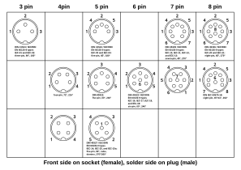
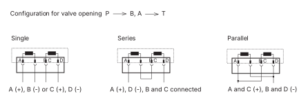

DIN Connector
A DIN connector is an electrical connector standardized by the Deutsches Institut für Normung (DIN), the German Institute for Standards, in the mid 1950's. It was originally made for audio equipment but it can be used for all kinds of things.
In our lab we often use DIN connectors because they are easily available from our suppliers and they are also quite cheap. They are also made by many different manufacturers.
See the image below for the most common contact arrangements for DIN connectors.

BICM connector
Laser displacement sensor connectors
FDRF603-80/250-232/U-IN/AL
Binder 712 Series Connector on sensor body: 09 0427 80 08 Connector on cable: 99 0426 10 08
| Pin nr | Color (8 wire) | Color (7 wire) | Function | Description |
|---|---|---|---|---|
| 1 | White | White | IN | |
| 2 | Brown | Brown | GND (power supply) | Power supply |
| 3 | Green | Green | TXD | RS-232 |
| 4 | Yellow | Yellow | RXD | RS-232 |
| 5 | Grey | Grey | GND (signal) | Signal ground |
| 6 | Pink | AL | I/O with different functions | |
| 7 | Blue | Blue | U/I | Analog voltage/current output ^[The manual reccomends a RC filter on the output] |
| 8 | Red | Pink | Power U+ | Power supply |
DIN Connector side
| Pin nr | Color (8 wire) | Color (7 wire) | Function |
|---|---|---|---|
| 1 | Blue | Blue | U/I |
| 2 | Green | Green | TXD |
| 3 | Red | Pink | Power U+ |
| 4 | Yellow | Yellow | RXD |
| 5 | - | - | - |
| 6 | Brown + Grey | Brown + Grey | GND (power supply) + GND (signal) |

Assembly instructions for a Binder 712 (99 0426 10 08) connector used to connect to FDRF laser triangulation distance sensors.
M12 connectors
A coded M12 connectors 4 pin
| Pin | Default wire color | Default function | Loadcell | Potmeter | Servovalve | LVDT |
|---|---|---|---|---|---|---|
| 1 | Brown | V+ (24 V) | D | V+ | A (+) | D |
| 2 | White | Signal 1 | E | Signal | B (-) | E |
| 3 | Blue | V- (GND) | G | V- | C (+) | G |
| 4 | Black | Signal 2 | F | - | D (-) | F |
Servovalve connector
Inside the [[servovalve]] there are two coils. The first coil is connected on pins A (+) and B (-), the second on C (+) and D (-).

A 4-pin electrical connector that mates with an MS3106F14S-2S is standard. All 4 torque motor leads are available at the connector so that external connections can be made for series, parallel, or differential operation. (Source p. 8)
Manifold connector (VKHKPS)
VKHKPS stands for low-pressure, high-pressure, pressure-switch (voorklep, hoofdklep, pressure-switch in Dutch). These are the signals that are used to control the [[hydraulic manifold]] blocks in the lab.
The connector on the controller side is a 25-pin male D sub with the following pinout (all other pins are not connected).
| Pin | Function (old) | Function (new 2024) |
|---|---|---|
| 1 | R1M (VK) | R1M (VK) |
| 17 | 24 V | |
| 21 | GND | GND |
| 22 | GND | GND |
| 23 | GND | GND |
| 24 | PS (Loop 2)[^1] | PS (Loop 2) |
| 25 | R2M (HK) | R2M (HK) |
On the manifold side an Amphenol 10-pin circular connector is used.
| Mgf. p/n | Type |
|---|---|
| MS3102A 18-1P | 10-pin bulkhead panel mount male |
| MS3106A 18-1S | 10-pin cable mount female |
| Pin | Function (old) | Function (new 2024) | oflex chain 819 |
|---|---|---|---|
| A | VK | VK | 1 |
| B | |||
| C | HK | HK | 2 |
| D | Spare 1 | 3 | |
| E | Shield (optional) | ||
| F | PS | PS | 4 |
| G | |||
| H | Common | GND | 5 |
| I | Common | GND | 6 |
| J | 24 V | PE |
[^1]: Not every connection box is wired to use the PS. If this is the case, they must be modified.